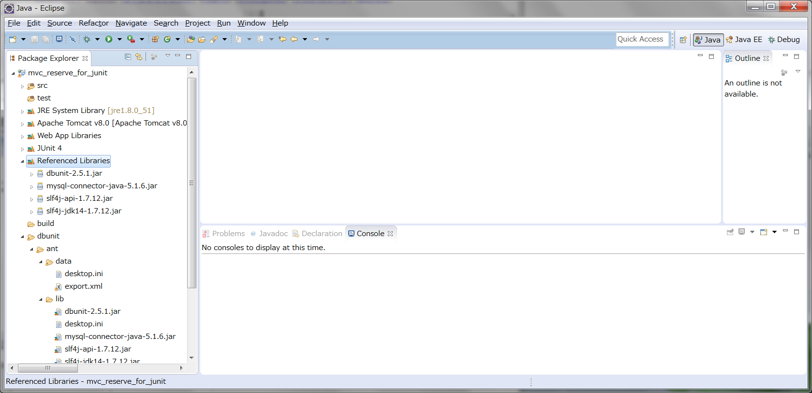

DBUnit
DBUnit
ここでは、DBUnit の導入の方法、基本的な使用方法について手順を追っていきます。
DBUnit の導入
以下の手順にて実施します。
- プロジェクトへ dbunit.jar 、その他のリソースをコピー
- dbunit.jar へのクラスパス設定
- XML 生成用 Ant ファイルの設定変更
dbunit.jar 、その他のリソースをコピー
dbunit
上記のフォルダを、施設予約コードのプロジェクトにペーストします

dbunit.jar へのクラスパス設定
プロジェクトを右クリック → [プロパティ] → [ビルドパスの設定] → Libraries タブで [Add JARs...]
先ほどコピーした dbunit\ant\lib フォルダの中にある全ての jar を選択して、OK を押します。
Referenced Libraries に選択した jar が追加されます。

XML 生成用 Ant ファイルの設定変更
dbunit/ant/antbuild.xml の以下の3項目を自分の環境に合わせて書き換えます。
MySQL をインストールしたときからユーザ名等を変更していなければ、
ユーザID は "root"、パスワードは ""（空文字列）としているはずです。
<project name="create.dbunit.test.data" default="mysql.export">
<taskdef name="dbunit" classname="org.dbunit.ant.DbUnitTask">
<classpath id="class.path">
<fileset dir="lib" includes="*.jar" />
</classpath>
</taskdef>
<target name="mysql.export">
<dbunit driver="org.gjt.mm.mysql.Driver"
url="jdbc:mysql://localhost/db_name?useUnicode=true&amp;characterEncoding=MS932"
userid="user_id"
password="password">
<export dest="data/export.xml" />
</dbunit>
</target>
</project>
そして、antbuild.xml を右クリック → [実行] → [Ant ビルド] とすることで
dest で指定した位置・名前（data/export.xml）で XMLファイルが生成され、"db_name" の中にあるテーブルのデータが出力されます。
生成した XML ファイルをそれぞれのテストケースに合わせて書き換え、
データベースの初期状態および結果状態としてテストに利用していきます。
テストケースの作成
DBUnit を使用するテストクラスは、以下の手順で実装します。
- org.dbunit.DatabaseTestCase を継承して作成
- protected IDatabaseConnection getConnection() throws Exception をオーバーライド
- protected IDataSet getDataSet() throws Exception をオーバーライド
本研修では、上記のルールを既に実装した、ユーティリティ込みのテストクラスを準備しています。
オーバーライドメソッド等の実装方法を参考にしてください。
DaoTC.java
DaoTC.java の DB の URL やパスワード等を書き換えて、
このクラスをそのまま継承したテストクラスを作成すれば、
DBUnit のメソッドが使用できるようになります。
DaoTC.java を継承して使用するには、以下のメソッドをオーバーライドしてください。
/**
* <pre>
* 初期化 XML 名取得.
*
* Overrideし、初期化対象のXML名を記述すること
* 尚、getClass().getResourceAsStream("name")にて取得するので パスは必要無し
*
* ex) return "init_table.xml";
* </pre>
*
* @return 初期状態を記述したXML
*/
protected String getInitXml() {
return null;
}
DaoTC.java を継承して作成したテストケースは、以下のようになります（一部抜粋）。
mvc_reserve_for_junit\test\jp\co\insightech\dao\ReserveDaoTest.java
package jp.co.insightech.dao;
import static org.junit.Assert.assertEquals;
import static org.junit.Assert.fail;
import java.sql.Connection;
import java.sql.SQLException;
import java.text.DateFormat;
import java.text.ParseException;
import java.text.SimpleDateFormat;
import java.util.Vector;
import org.junit.Before;
import org.junit.Test;
import jp.co.insightech.Reserve;
import jp.co.insightech.Room;
import jp.co.insightech.User;
import jp.co.insightech.testcase.DaoTC;
public class ReserveDaoTest extends DaoTC {
ReserveDaoCloseCountMock dao;
/**
* セットアップ.
*/
@Before
public void setUpMock() throws Exception {
dao = new ReserveDaoCloseCountMock();
}
/**
* 初期化用XMLを取得します.
*/
protected String getInitXml() {
return "init/init.xml";
}
/**
* <pre>
* 【概要】
* ・施設テーブルの全てのレコードを表す Room モデルが、
* ID順にリストに格納され返却されること.
*
* 【条件】
* ・DBの状態 : init/init.xml
*
* 【実行】
* ・{@link ReserveDao#getRoomList()}
*
* 【結果】
* ・戻り値 : 以下の順にRoomモデルを格納したリスト
* Room : id=1, name=大講堂
* Room : id=2, name=会議室
* Room : id=3, name=談話室
*
* ・コネクションがクローズされること
*
* </pre>
*/
@Test
public void getRoomListWhenExistRecord() {
try {
// 条件
// 実行
Vector roomList = dao.getRoomList();
assertEquals(3, roomList.size());
// 結果
this.assertRoom(1, "大講堂", (Room) roomList.get(0));
this.assertRoom(2, "会議室", (Room) roomList.get(1));
this.assertRoom(3, "談話室", (Room) roomList.get(2));
assertEquals(1, dao.closeCount);
} catch (Exception e) {
fail();
}
}
/**
* <pre>
* 【概要】
* ・登録が１件の場合、登録されること.
*
* 【条件】
* ・引数 : reserve
* date : 2008/08/15
* time : 11
* room : id = 1
* user : id = 1111
* ・DBの状態 : init/init.xml
*
* 【実行】
* ・{@link ReserveDao#register(Reserve))}
*
* 【結果】
* ・DBの状態 : result/result_oneReserve.xml
* ・コネクションがクローズされること
* </pre>
*/
@Test
public void updateWithOneReserve() {
try {
// 条件
Reserve reserve = this.createReserve(1, "2008/08/15", 11, "1111");
// 実行
dao.register(reserve);
// 結果
this.assertDBDataSet("result/result_oneReserve.xml");
assertEquals(1, dao.closeCount);
} catch (Exception e) {
fail();
}
}
/*--------------- テスト用ユーティリティ ---------------*/
private Reserve createReserve(int roomId, String date, int hour) throws ParseException {
Reserve reserve = new Reserve();
Room room = new Room();
room.setId(roomId);
reserve.setRoom(room);
reserve.setDate(new java.sql.Date(format.parse(date).getTime()));
reserve.setTime(hour);
return reserve;
}
private Reserve createReserve(int roomId, String date, int hour, String userId) throws ParseException {
Reserve reserve = createReserve(roomId, date, hour);
User user = new User();
user.setId(userId);
reserve.setUser(user);
return reserve;
}
private void assertRoom(int id, String name, Room actual) {
assertEquals(id, actual.getId());
assertEquals(name, actual.getName());
}
private DateFormat format = new SimpleDateFormat("yyyy/MM/dd");
/*--------------- モッククラス ---------------*/
/**
* クローズメソッド呼び出し数をカウントするモッククラス
*
*/
class ReserveDaoCloseCountMock extends ReserveDao {
/** クローズが呼ばれた回数 */
int closeCount = 0;
@Override
protected void close(Connection conn) throws SQLException {
closeCount++;
super.close(conn);
}
}
}
mvc_reserve_for_junit\test\jp\co\insightech\dao\init\init.xml
<?xml version='1.0' encoding='UTF-8'?>
<dataset>
<room_table ROOM_ID="1" ROOM_NAME="大講堂"/>
<room_table ROOM_ID="3" ROOM_NAME="談話室"/>
<room_table ROOM_ID="2" ROOM_NAME="会議室"/>
<reserve_table />
</dataset>
mvc_reserve_for_junit\test\jp\co\insightech\dao\result\result_oneReserve.xml
<?xml version='1.0' encoding='UTF-8'?>
<dataset>
<reserve_table RESERVE_DATE="2008-08-15" RESERVE_TIME="11" RESERVE_ROOM_ID="1" RESERVE_USER_ID="1111"/>
</dataset>
上記のサンプルの動きを確認してください。
Mock の使用
dao = new ReserveDaoCloseCountMock();
の部分を見てください。
通常であれば、テスト対象のクラスは ReserveDao クラスなので、
dao = new ReserveDao();
としてテストするところですが、ReserveDao クラスではなくて、ReserveDaoCloseCountMock クラスをテスト対象としています。
このクラスはこのテストクラスの下の方で次のように定義されています。
/**
* クローズメソッド呼び出し数をカウントするモッククラス
*
*/
class ReserveDaoCloseCountMock extends ReserveDao {
/** クローズが呼ばれた回数 */
int closeCount = 0;
@Override
protected void close(Connection conn) throws SQLException {
closeCount++;
super.close(conn);
}
}
このクラスは、ReserveDao を継承しており、close メソッドのみをオーバーライドしています。
従って、ReserveDaoCloseCountMock クラスをテスト対象とすることで、ReserveDao クラスのメソッドはテスト可能です。
何のために、このようなことをしているかというと、一つだけオーバーライドしている close メソッドのテストをするためです。
正確に言うと、close メソッドの挙動自体はテスト出来ていませんが、close メソッドが呼ばれているかどうかを確認しています。
©日本インサイトテクノロジー株式会社